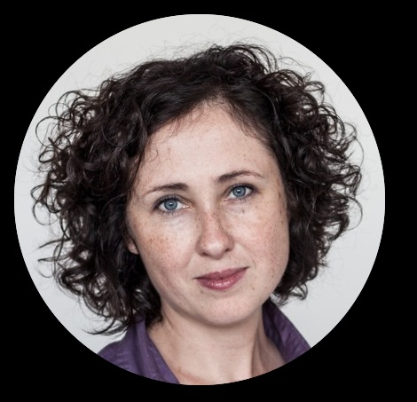

Praca terapeutyczna, towarzyszenie ludziom w zmianie to moja pasja i powołanie. Buduję trwałe relacje z klientami dzięki empatii, umiejętności zrozumienia drugiego człowieka, bezwarunkowo pozytywnemu nastawieniu do każdego oraz szacunkowi. Osoby z którymi pracuje czują się w relacji ze mną bezpiecznie, mimo poruszania trudnych emocjonalnie treści. Do każdego podchodzę indywidualnie, skrupulatnie analizując jego sytuację życiową. Potrafię wzbudzić w osobach, z którymi pracuję, motywację do zmiany.
uzależnionymi od substancji psychoaktywnych oraz alkoholu
będącymi w związkach z osobami uzależnionymi
uwikłanymi w uzależnienia behawioralne
z zaburzeniami nastroju
pragnącymi zrozumieć mechanizmy własnego postępowania oraz wprowadzić zmianę w swoim życiu zarówno osobisty jak i zawodowym
W 2005 roku ukończyłam Socjologię na Uniwersytecie Łódzkim. W 2007 roku na Uniwersytecie Warszawskim ukończyłam Podyplomowe Studium Terapii i Trenigu Grupowego. Następnie na ok 5 lat związałam się ze światem biznesu, gdzie pracowałam jako coach, trener. W między czasie ukończyłam studia magisterskie na kierunku Psychologia Kliniczna w Szkole Wyższej Psychologii Społecznej oraz ukończyłam Studium Terapii Uzależnień i Współuzależnienia w Instytucie Psychologii Zdrowia.
Uczestniczyłam w szkoleniach organizowanych przez Polski Instytut Ericksonowski, Instytut Psychologii Zdrowia, konferencjach Polskiego Towarzystwa Terapii Motywującej. Jestem Mistrzem NLP.
Od 2012 roku związana jestem zawodowo ze Szpitalem Psychiatrycznym przy ulicy Nowowiejskiej 27. Pracuję w Poradni z osobami uzależnionymi od substancji psychoaktywnych i alkoholu oraz rodzinami osób uzależnionych. Ponadto jestem zaangażowana w pracę terapeutyczną z pacjentami Oddziału Dziennego objętymi leczeniem substytucyjną metadonem. W 2012 roku w Mazowieckim Specjalistycznym Centrum Zdrowotnym (Tworki) odbyłam staż psychoterapeutyczny na Oddziale Dziennym Depresji i Nerwic. Od 2012 roku prowadzę także prywatną praktykę terapeutyczną.
W latach 2007 - 2012 związana byłam z polskim rynkiem szkoleniowym. Prowadziłam warsztaty z rozwijania inteligencji emocjonalne, zarządzania zaangażowaniem, radzenia sobie ze stresem, komunikacji, asertywności oraz zajmowałam się coachingiem kadry menedżerskiej polskich przedsiębiorstw. Prowadziłam projekty szkoleniowo - coachingowe m.in. dla takich firma jak: Atlas Sp. z o.o., Bacha Polska Sp. z o.o., Bader polska, LCL Dystrybucja Sp. z o.o., Michalczyk i Prokop Sp. z o.o., Organika S.A., Praktiker Polska, SITA Polska Sp. z o.o., Urząd Miasta Łodzi, Vision Express Sp. z o.o., MOPS woj. łódzkiego.
Jestem współzałożycielem Stowarzyszenia "Podajmy dalej", które powstało w 2013 roku. W ramach prac na rzecz Stowarzyszenia prowadziłam warsztaty umiejętności wychowawczych dla matek będących pacjentkami programu substytucyjnego z umiejętności wychowawczych, prowadziła warsztaty dla osadzonych w Areszcie Śledczym Warszawa - Służew z zakresu radzenia sobie ze złością . Koordynowałam projekt "Wyjdźmy na kulturę", którego celem było umożliwienie pacjentom wychodzącym z uzależnienia od opioidów powrotu do życia kulturalnego. Od września 2014 roku współpracuję z Teatrem Kamienica uczestnicząc z moimi pacjentami z programu leczenia substytucyjnego w spotkaniach z młodzieżą po przedstawieniu "My dzieci z dworca zoo".
Projekt w Areszcie ŚledczymJeśli chciałbyś się dowiedzieć więcej lub umówić na pierwsze spotkanie - dzwoń lub napisz emaila!
Spotkania odbywają się w lokalu przy Alejach Niepodlogłości 157.
Koszt godzinnego spotkania to 130 PLN.
kamila [małppa] sieraczkiewicz.pl
+48 502 338 345